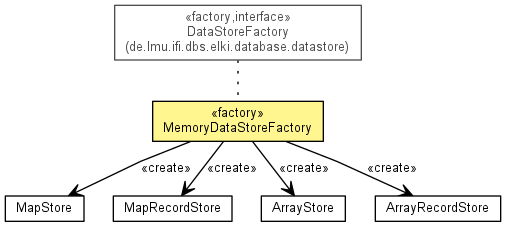

de.lmu.ifi.dbs.elki.database.datastore.memory
Class MemoryDataStoreFactory
java.lang.Object
 de.lmu.ifi.dbs.elki.database.datastore.memory.MemoryDataStoreFactory
de.lmu.ifi.dbs.elki.database.datastore.memory.MemoryDataStoreFactory
- All Implemented Interfaces:
- DataStoreFactory
public class MemoryDataStoreFactory
- extends Object
- implements DataStoreFactory

Simple factory class that will store all data in memory using object arrays or hashmaps.
Hints are currently not used by this implementation, since everything is in-memory.
| Methods inherited from class java.lang.Object |
clone, equals, finalize, getClass, hashCode, notify, notifyAll, toString, wait, wait, wait |
MemoryDataStoreFactory
public MemoryDataStoreFactory()
makeStorage
public <T> WritableDataStore<T> makeStorage(DBIDs ids,
int hints,
Class<? super T> dataclass)
- Description copied from interface:
DataStoreFactory
- Make a new storage, to associate the given ids with an object of class dataclass.
- Specified by:
makeStorage in interface DataStoreFactory
- Type Parameters:
T - stored data type- Parameters:
ids - DBIDs to store data forhints - Hints for the storage managerdataclass - class to store
- Returns:
- new data store
makeRecordStorage
public WritableRecordStore makeRecordStorage(DBIDs ids,
int hints,
Class<?>... dataclasses)
- Description copied from interface:
DataStoreFactory
- Make a new record storage, to associate the given ids with an object of class dataclass.
- Specified by:
makeRecordStorage in interface DataStoreFactory
- Parameters:
ids - DBIDs to store data forhints - Hints for the storage managerdataclasses - classes to store
- Returns:
- new record store